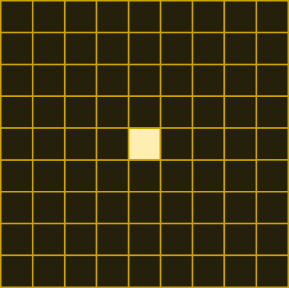
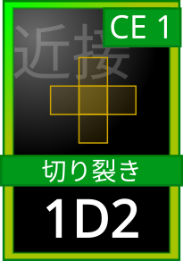
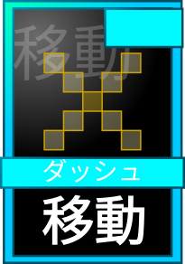
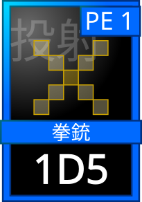
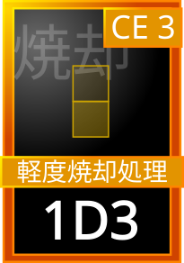
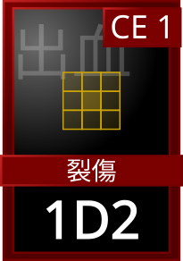
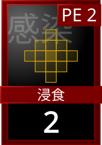

この戦闘ルールは未確定部分を含みます。今後の改訂で内容が変わる可能性があります。

本作の戦闘はタイルマップを用いて行われる。プレイヤーと敵は駒としてマップ上に配置され、距離、位置、カードを使いながら戦う。
マップは15×11マスで構成される。各キャラクターは1マスを占有する。敵との距離は、間にあるマス数で計算する。
攻撃の種類によって有効距離が異なる。
| 近距離 | 1から2マス |
|---|---|
| 中距離 | 3から5マス |
| 長距離 | 6マス以上 |
マップ上には遮蔽物タイルが存在する場合がある。遮蔽物には以下の効果がある。
- 通過できない。
- 攻撃が通らない。
- 遮蔽物の後ろにいる場合、遠距離攻撃を防ぐことができる。ただし、同様に自分の攻撃も相手に届かない。
DEXは行動順と回避に関係する。回避は素早さで攻撃を避ける行動で、遠距離攻撃に強く、近距離攻撃には避けにくい。回避値は、受ける攻撃の種類によって変わる。
この数値以下が出れば回避成功となる。ただし、回避率は最大90％までとする。回避を選択した場合、受身は行えない。
攻撃の種類は、使用されたカードによって決まる（近接カード＝近距離攻撃、投射カード＝遠距離攻撃）。焼却などの特殊カードは、カードに記載された種類に従う。
STRは近接攻撃の補正と受身に関係する。
近接攻撃補正
受身
受身を行うと、受けるダメージを軽減できる。受身は体で攻撃を受け止める行動で、近距離攻撃に強く、遠距離攻撃には効果が小さい。軽減する値は、受ける攻撃の種類によって変わる。
受身を行った場合でも、軽減後のダメージは最低1とする。
受身を選択した場合、回避はできない。

キャラクターは1ターンにつき1マス移動できる。さらに移動カードを使用することで、追加の移動が可能になる。ただし、移動カードの使用は1回の行動として扱うため、使用したターンは攻撃などほかのカードを使用できない。
基本的にキャラクターは1ターンに1回行動できる。カードの使用は、移動カードも含めて1回の行動として扱う。
行動する順番は、AP（行動値）が大きいキャラクターから順に行動する。APが同じ場合は、DEXが高いキャラクターが先に行動する。それでも同じ場合は、KPが順番を決める。
攻撃ダイスで最大値が出た場合、クリティカルが発生する。クリティカルが発生すると、追加攻撃が可能になる。この連続攻撃は最大3回まで発生する。
カードを使用するにはEP（エネルギー）が必要となる。EPには2種類存在する。
| CE | Close Energy。近接行動に使用するエネルギー。 |
|---|---|
| PE | Projectile Energy。遠距離行動に使用するエネルギー。 |
CEは近接行動に使用するエネルギー。戦闘開始時のCEは3。最大値は5。
回復条件：敵から4マス以内にいる場合、毎ラウンド1回復する。
PEは遠距離行動に使用するエネルギー。戦闘開始時のPEは3。最大値は5。
回復条件：敵から4マス以上離れている場合、毎ラウンドごとに1回復する（戦闘開始から数えて偶数ラウンド）。
プレイヤーはカードデッキを使用して戦う。デッキは6枚のカードで構成する。全員共通の共通カード3枚（移動・近接・投射）と、キャラクターごとのカード3枚からなる。これとは別に、切り札カードを1枚選んで持ち込める（「切り札カード」を参照）。戦闘開始時に、自分と敵のカードはすべて公開される。そのため、プレイヤーは相手の行動や攻撃を予測しながら行動する必要がある。
なお、実際の戦闘では、キャラクターによって特殊な効果を持つカードを所持している場合がある。これらのカードは通常のカードとは異なる効果を持ち、使用することで戦闘を有利に進めたり、特定の状況に対応したりすることができる。
共通カード（移動・近接・投射）は、使用したラウンドの次のラウンドでも続けて使用できる。ただし、カードに必要なエネルギーがある場合は、使用のたびに消費する。
キャラクターごとのカードは、使用すると次のラウンドでは使用できない。その次のラウンドから再使用できる。





| 移動 | 移動のみを行うカード。使用することで追加の移動が可能になる。使用したターンは、ほかのカードを使用できない。 |
|---|---|
| 近接 | 近距離戦闘用のカード。STR補正が適用される。2マス以内で使用可能。 例：ナイフ、打撃、格闘 |
| 投射 | 遠距離攻撃用のカード。2マス以上で使用可能。PEを消費する。 例：銃、投擲武器 |
| 焼却 | 変異体討伐用の特殊攻撃。切り札カードとして扱い、SVH所属のキャラクターが使用できる。 例：軽度焼却処理 使用条件：敵のHPが5以下。必要エネルギー：CE3以上。変異体は通常の攻撃では完全に倒すことができない。焼却によってのみ完全に討伐できる。 |
切り札カードは、通常のデッキ（共通カード3枚＋キャラクターごとのカード3枚）とは別枠のカードである。
- 戦闘の前に、敵や状況に合わせて、使用する切り札カードを1枚だけ選ぶ。戦闘中に変更することはできない。
- 切り札カードは、所属や職などの条件に対応するキャラクターだけが使用できる。各キャラクターが選べる切り札は、その所属や職に対応するものに限られる。
- 切り札カードは、使用すると次のラウンドでは使用できない。その次のラウンドから再使用できる。
- 切り札カードに必要なエネルギーがある場合は、使用のたびに消費する。
例：変異体との戦闘では、SVH所属のキャラクターは切り札として焼却カード「軽度焼却処理」（CE3、1D3）を選ぶ。SVHは必ずシナリオに同行するため、変異体が登場する戦闘では焼却を使用できる。
焼却以外の切り札カードは、SVH以外の所属や職にも用意される。その内容は今後追加する。